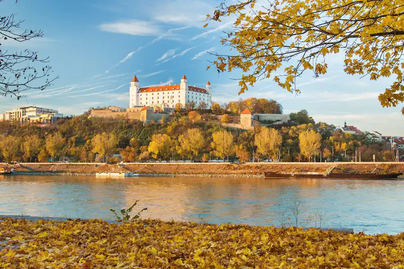

Bem-vindo a EuroTour
Sobre nós
EuroTour é um site que ajuda você a planejar sua viagem para a Europa, desde a compra das passagens, até a visita aos pontos turísticos mais importantes de cada região!
5 Destinos da Europa que você deve conhecer!
Lugares que merecem ser explorados, indo além do eixo convencional
- - Wroclaw, Polônia
- - Colmar, França
- - Hvar, Croácia
- - Riga, Letônia
- - Bratislava, Eslováquia 

A cidade polonesa de Wroclaw, que já foi chamada de Breslávia no passado, tem ares de conto de fadas. Aqui o turista vai se deparar com casinhas fofas e mais de 200 gnomos espelhados pelas ruas. As estátuas surgiram como um símbolo de resistência ao comunismo, mas até hoje “brincam” com os turistas. Surreal, não é mesmo?
Outro ponto alto do destino é o fato de já ter pertencido à Boêmia, Áustria, Prússia e Alemanha. E claro que o centro histórico de Wroclaw guarda muitos pedacinhos de cada uma dessas épocas.

É cidadezinha francesa e charmosa que chama, né? Colmar fica na região da Alsácia e bem lembra o vilarejo de A Bela e a Fera. Por sua posição no mapa, a cidade é uma mistura das culturas francesas, alemãs e suíças. E claro que esse samba todo só poderia resultar em uma cidade incrível.
Passear pelo centrinho histórico de Colmar é a pedida para aproveitar toda a atmosfera do lugar e também admirar a beleza arquitetônica. Imperdível, não deixe de conhecer a Veneza de Colmar, lugar super fofo e de rende muitas fotos.

Com o título de a ilha mais badalada da Croácia, Hvar é um dos destinos mais cobiçados para curtir os dias quentes do verão europeu. Quer ver gente bonita e descolada? Hvar tem. Busca águas cristalinas e belas paisagens? Hvar tem. Quer visitar monumentos históricos? Hvar tem também.
É importante mencionar que, diante de suas inúmeras atrações, Hvar está longe de ser um destino exclusivamente jovem. Não deixe de conhecer a Praça Principal e o Mosteiro Franciscano, além de passear pelas ruelas super simpáticas de Hvar.

A capital da Letônia é uma cidade com C maiúsculo. Como a maioria das cidades europeias, boa parte de seus pontos turísticos está concentrada em seu centro histórico. Em Riga, as belezas arquitetônicas e muita história formam um combo perfeito.
Além da Catedral da Natividade, visite também o Monumento da Liberdade de Riga, a Igreja de São Pedro, a Escultura dos Músicos de Bremen, a House of the Blackheads, a Cat House e as simpáticas casas apelidadas de Três Irmãos.
Vivendo seus dias de metamorfose, a capital da Eslováquia guarda resquícios da época em que esteve sob o regime comunista. Foco dos turistas que visitam a cidade, o centro histórico é o coração de Bratislava. É aqui que você vai encontrar boa parte de suas atrações.
Entre os pontos turísticos está o fofíssimo Castelo de Bratislava, que fica no alto do centro histórico, e as várias estátuas dos operários que estão espelhadas pelas ruelas dessa região.
Estranha e até um pouco brega, não deixe de conferir de perto a ponte de liga o sul ao norte da cidade e que parece abrigar um disco voador. A ponte SNP data da década de 70 e é, sem dúvida, um dos maiores símbolos do comunismo.